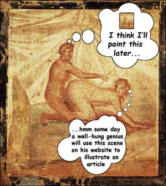

GENIUS HOME - Reader's Creative Thinking Questions : Sex Transmutation Q&A 2 ...
Sex Transmutation Q&A 2
Answering more of your questions on practical sex transmutation

Brian wrote to me recently asking me for greater clarity on the practice of Sex Transmutation. (Please refer to my
main article Sex Transmutation: Sexual Energy into Genius if this is your first time at this website.)
Here is Brian's question:
Hey Wily,
I would like for you to give me specifics on using the immense power of sex transmutation. Is it you use sexual
fantasy energy built up and then transfer that energy to goals? I need step by step directions without all the disconnects I read about
on the internet.
Thank you.
Brian
And here is my reply:
Hi Brian,
Thanks so much for your email and questions. It's great to hear from you.
I wrote my article on Sex Transmutation a few years ago, and periodically have responded to questions about Sex Transmutation.
I have been revisiting the subject in my own mind the last week or so.
As part of my research, I bought Dr Charles Runel's 'Practical Application of Integrative Sex Transmutation' which is a 2 CD set on the subject.
I am half-way through the course and am finding his thoughts on the subject very interesting. I will report back on that in full when I have
listened to both CDs. He is a medical doctor and claims to have been using sex transmutation for about 30 years. So far his techniques seem to
centre on preservation of the semen either through chastity (abstinence) or by becoming very masterful at sex so that you don't ejaculate... and
then redirecting that sex energy into health and work. For the abstinence part, he tells how at college or Med School he eliminated TV and
magazines from his life, would read philosophical type books etc before bed, all to cut down on sexually stimulating images and thoughts. He
would also work long hours and pride himself on his levels of productivity. That sort of thing. He seems like a very genuine, humble sort of
person genuinely interested in helping people and his CDs ($20) might appeal to you.
From my perspective, sex transmutation takes several forms.
1. Inspiration. This is where you use your natural sexual desire for someone to inspire you to be creative. You will
have had experiences of this. You fall for a girl. You can't stop thinking about her. You start dating. And because you are in love and lust
with her, you start thinking up things you can do to a) impress her b) please her and make her happy c) make her like you. It's kind of a
natural thing. You are much more creative in this state than you are normally. It's because your energy, hopes, desires and expectations are
all keyed-up with the excitement and all the hormones and 'feel-good' chemicals flooding your body.
How can you use this? Well, if you are in that stage, you can make the most of it by trying to be even more creative. Really push the boat out.
Try your hand at writing love letters, poems or songs. If that's not your thing, maybe coming up with elaborate, unforgettable dates. What about
practical, profitable uses? Can you be a 'champion' in your profession? Can you let that love/lust drive you to be the best at what you do... in
her honor? Can you create a new product and dedicate it to her? What you are trying to do is use the hook (the girl) to feed into your profession
and inspire you to greater deeds.
What if there isn't a particular girl that is inspiring you, or you are married and your relationship is a little flat?
What turns you on? You can fantasize or look at nude pics and allow yourself to get inspired by the images you are playing with or looking at.
Focus in on what turns you on and start to vocalize or write down what it is that you like. At first you are going to be a bit of a caveman and
your description will be just vulgar porno talk... but let it grow from there until you are really getting into what turns you on, like the
particular curve of the breast, or the smooth hollow below or beside her hip, or the tautness of her abdomen. For me, I try and write poetry to
describe the intensity and beauty of what I am thinking about. I let the 'charge' empower me and empower my writing. I'm using it to lift me up
into a higher state, into a more potent form of communication.
The essence of sex transmutation is to get the energy up, and then focus it in on what you want to focus on... as though you are making
love/having sex through that. So when I write poetry, my words are sex. I am having sex in the words.
| Sex transmutation is the art of getting 'turned-on' and sustaining that heightened state of mind,
body and spirit in all that we do. The art is in directing and managing the energy intelligently so that it can create something.
Nature's will for sex is creativity... whether of new babies or new ideas. Sex must create. |
| Wily Walnut |
The creative act is to transpose the idea of sex on to your particular project. The idea being that you take the role of the master pleasure
giver (and you get your pleasure from that) just as in the ideal sex you are a master of your sexual energy and can last as long as you like and
drive your partner to the heights of ecstacy. In a business situation you are the master pleasure giver and your aim in to drive your clients
into ecstacy over your products or services. In art, you are the master pleasure giver in making your picture, sculpture or music something that
totally wows your audience and gives them a pleasure rush whenever they experience your work.
The other part of inspiration is the Muse. And this involves worship. We see this evolve into religious feeling where mankind
invented Goddesses and Gods, which were idealized perfect women and men, that they could then worship. In modern religions like
Christianity, you have Nuns becoming 'the brides of Christ' and their worship of this idealized 'perfect' man takes on an almost erotic
ecstacy as exemplified by someone like St Theresa of Avila.
You can use this aspect of sex transmutation by idealizing your wife, girlfriend or woman of your desire and seeing them as an embodiment of God,
or the Universal Woman. Then all your acts are acts of worship and dedication to them. When you make love, you are actually at worship on the
'prayer mat of the flesh'. So you can play with this idea, and try and dedicate your actions to this idealized spiritual woman or women. In
India, they have a system of Yoga (to achieve enlightenment or union with God) called Bhakti Yoga. In this they dedicate everything they do to
God with Love, so they do everything with a totally loving attitude as thought they are doing it for God. So if they are washing the floor, in
their minds they are washing the floor for God. This transmutes an ordinary situation into a spiritual experience. Can you see how you could do
the same thing with sex?
2. Redirection. Napoleon Hill's sex transmutation chapter seems to imply a strong use of willpower to 'channel' sex energy into
activity. This reminds me of those old fashioned health books that warned against 'self-abuse' (masturbation) and recommended long walks and cold
showers instead! This really is about a deliberate decision to get active and busy and keep pushing into activity rather than to give in to
sexual thoughts and indulgence. I've been reading a dog book called, 'Be The Pack Leader' by Cesar Millan from TV's The Dog Whisperer show. He
tells how he rehabilitates disturbed dogs with lots of 1) exercise 2) discipline and lastly 3) affection. Dogs have a natural need to channel
their energy in purposeful walking. They need the discipline of a strong alpha leader (you, the owner) to be psychologically happy.
I think there are strong parallels with our own biological ancestry needs. In primate groups, it was the alpha male who got the pick of the females. This would have been the case with early humans too. Gradually though we
evolved away from pure brute strength alphas. Some of the betas started sneaking in behind the alpha's back to get some quick action with a
female. The strategizing required to achieve this helped brains evolve and we started to get more variety occurring in who could mate with the
females. The clever ones started to get laid too! It evolved to where the alpha males were not neccessarily just the strongest but also the cleverest and most
powerful, in terms of being able to get food (or later money), good territory (property / things), and protection (weapons / leadership).
So, our male biology is prepped with the understanding that the cleverer we are and the more we accomplish and become powerful, the more
desirable we will be to the opposite sex. And you can see that demonstrated clearly where 80-year-old billionaires have 25-year-old babes on
their arm.
So how do you apply this practically?
Really, it's about ramping up your ambition with the understanding that the more you achieve the higher your status. You want to be seen as the
silverback of your profession or society.
It is that old bugbear, willpower, discipline. You keep your mind on a tight leash, focussed and purposeful when you are working (with a deep
background understanding that it's all about the sex, but that delayed gratification will lead eventualy to greater gratification).
3. Blending. This really refers to what you were talking about with fantasy and goals. Here's how I like to apply it. Let's say
that you have a goal to earn an extra $1000 a month. You have some ideas about how you are going to achieve that, or not. But you visualize the
goal as achieved. Now, if you are highly motivated by money, it may be enough for you to just visualize having the extra income and what you will
do with it. But if you are not especially money minded, you need to add some 'juice' to the visualization. And that's where you can pull some
sexual fantasy in. If you already have a partner, you can imagine telling them how you've created this additional $1000 a month, and celebrate it
with them. You would see them getting really excited and turned on by what you have done, telling you how pleased and proud they are of you, and
then let them reward you by having sex right then and there in whatever ways you want to fantasize (you might even make love in a big pile of
money!).
What this does is tie your goal visualization in with a lot of pleasure, linking the two up. It gives you extra energy to make the visualization
easier and sustain it longer. It sets up the idea that achievement of the goal will include all this sex gratification. Now remember, keep
flitting back to the achievement of the goal itself. Don't get lost in the sex! You will feel horny as you are doing this and will probably get
an erection as you are doing it, but don't start masturbating or seeking out a chance to have sex to relieve the heat and lust. This energy is
for your goal.
4. Desire tolerance. Most guys masturbate at some time. It starts early in life and they do it furtively when we
are in their teens. They don't want to be caught, so it ends up being a rapid thing. It's a race to the 'finish' line. This
teaches guys to rush towards the end of lust, where you ejaculate and the lust ends (until it builds up again). With goals, a lot
of people come to realize that the real pleasure of a goal is in the working towards it, more so than it's achievement. A lot of people
report feeling flat after a goal is achieved, whereas they felt excited when they were working towards it. Sounds a lot like sex, doesn't
it? Well, just as we are told to enjoy the process of working towards a goal, we can also learn to enjoy and get great pleasure from FEELING
DESIRE. Most of us are keyed up to the idea of sexual pleasure coming from ejaculation. What we want to do is retrain our minds to recognize
that there is longer lasting pleasure in being horny and feeling desire for someone. Desire fires up (turns on) our minds and bodies.
Ejaculation switches the mind and body off for a while (we need to rest afterwards).
Part of sex transmutation then is to re-jig our priorities and get pleasure from being in a state of desire and from the state of mind that it
puts us in. We can delight in our heightened abilities to be creative, productive, funny or insightful.
Okay, I have got to go now Brian. I hope this has given you some additional thoughts on the subject. I am not sure that I have been any clearer
than any of the 'disconnects' you refer to out there on the web. It is a complex subject and hard to objectify and make scientific, but
definitely worthy of personal experimentation.
Warmest Regards,
Wily
Related articles:
Additional References:
Napoleon Hill Foundation: http://www.naphill.org/
Dr Charles Runel: http://www.templerepair.com/practical_sex_transmutation.htm
Become an Alpha Male
|
THE BRAIN SQUEEZER NEWSLETTER!
Sign-Up
For Wily Walnut's "The Brain Squeezer" Newsletter and learn to squeeze all the creative thinking juices from your brain!
Get your juiciest ideas and genius IQ power flowing!
Wily Walnut: Discover How To Banish The Inner Moron, Shake
Off the Dust Of Mediocrity and Discover the Genius You Were Born To Be!
|
Wily Walnut is the headbrain at http://www.WilyWalnut.com, your top resource for
unleashing the genius within, becoming infinitely creative, intelligent and brilliant in all that you
do!
GENIUS ARTICLES HOME IQ TESTS - CREATIVITY - GENIUS - BRAIN STORMING - SELF-HELP - BRAINTEASERS - WILY WALNUT
|